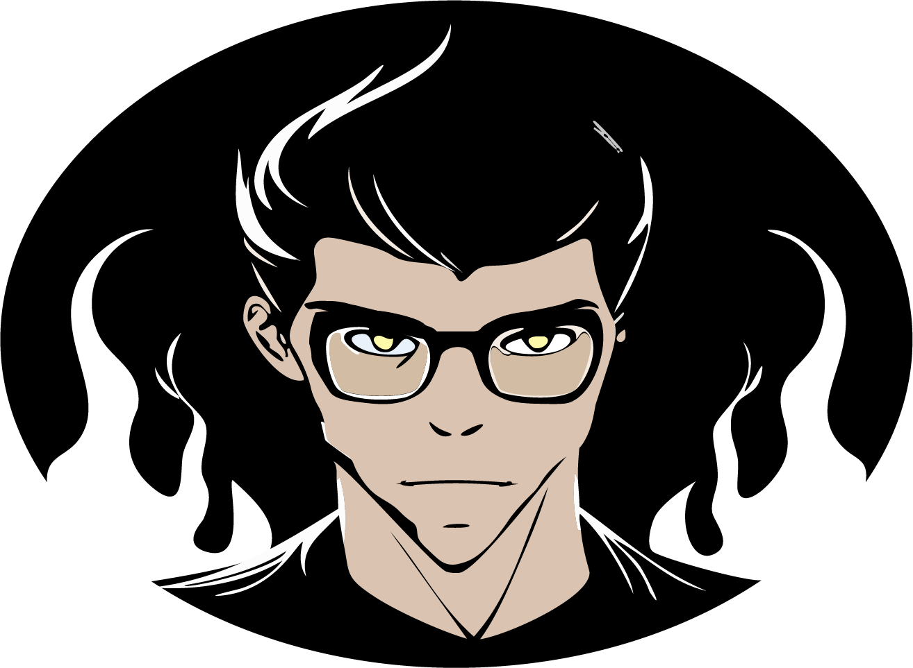
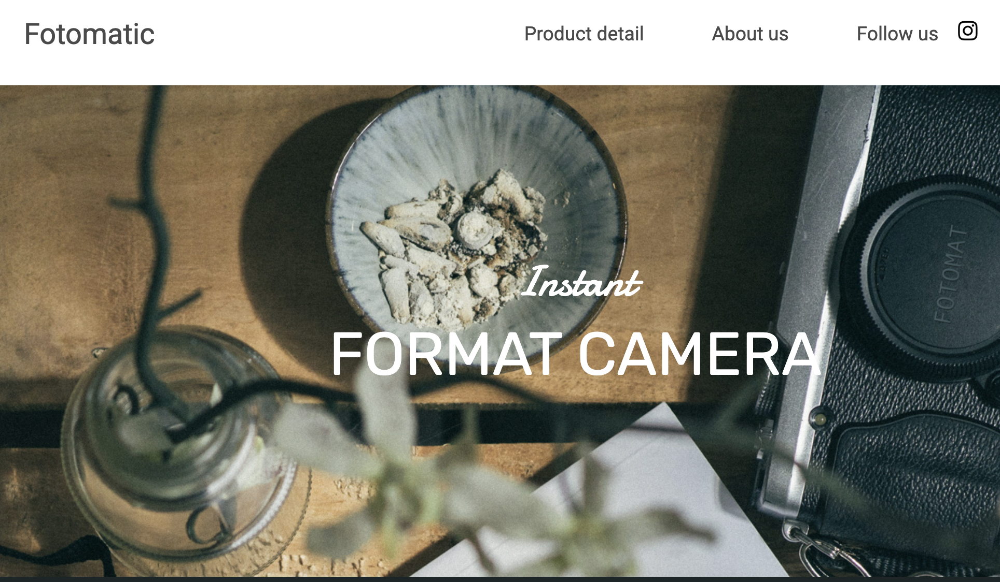

About Me
I was born and raised in Los Angeles and am currently studying full-stack web development. My interests include playing guitar, video games, and billiards. Recently I have discovered a passion for coding and building web applications.
After 24 years at Costco Wholesale, I developed strong customer-service, problem-solving, teamwork, and leadership skills. I am now transitioning into web development, where I can combine my creativity and critical thinking to build engaging and functional websites.
Currently studying: Express, SQL, and Postgres.
Technical Skills
Projects
Fix Fotomatic

In this project we were given broken front end code and asked to debug it while following a specific 3-layout wireframe.
Colmar Academy

A responsive home page for an imaginary college. This project utilizes CSS Grid and Flexbox to manage complex mobile and desktop layouts.
Mixed Message

A JavaScript exercise focused on logic. It generates random, humorous messages composed of three separate pieces. Refresh for a new surprise!